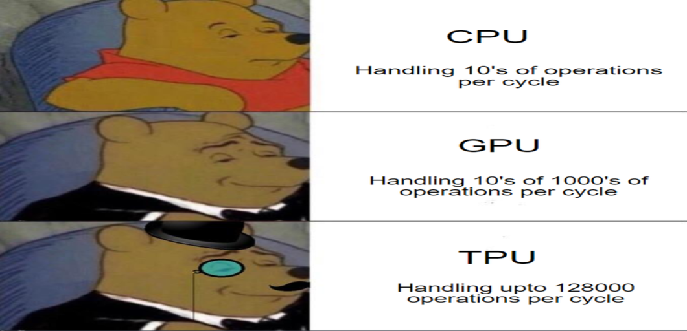

What is TPU?
A tensor processing unit (TPU) is an AI accelerator application-specific integrated circuit (ASIC) developed by Google specifically for neural network machine learning. TPUs are specifically optimized to perform fast, bulky matrix multiplication. TPUs are 15x to 30x faster than GPUs and CPUs, Google says - source.

Prepping of TPU environment in Colab:
Create a new Python Notebook in Google Colab, make sure to change the runtime to TPU and you’ll be allocated ~12.72 GB RAM, You can then increase the memory allocation to ~35.35 GB RAM by running the following command.
while(1):
d.append('1')
The above command tries to expand (thanks to ‘append’ command) RAM and crashes in the process. Click on the ‘get more ram’ after the crash of previous memory allocation. For more such tips, feel free to refer my previous blog.
TPU + Talos Pipeline:
I’m considering the Kaggle IEEE-CIS Fraud Detection competition, I’ll now breakdown step by step of a fast way of hyperparameter optimization Deep learning pipeline in colab using TPU.
1–3. Preparation of data for Modeling:
I’ve used the similar first three steps from my previous blog, Automate Kaggle Competition with the help of Google Colab namely:
1. Downloading the datasets from API calls.
2. Pre-Processing and Data Wrangling.
3. Feature Engineering and Feature Selection.
4. Scaling the Data:
Adding to this we’ll be scaling the data to change the values of numeric columns in the dataset to a common scale. As the features are having different ranges, it is very important to scale data before imputing to Deep neural networks.
scaler = StandardScaler()
# fit and transform only on training data
final_tr_scaled = scaler.fit_transform(final_tr)
### Apply on test data ###
final_ts_scaled = scaler.transform(final_ts)
5. TPU Initialization:
To use TPU effectively and use all the workers and cores provided by the colab TPU, we need to initalize the TPU system by using the following code to initialize a TPU strategy object which will be further used in the model building.
resolver = tf.distribute.cluster_resolver.TPUClusterResolver(tpu='grpc://' + os.environ['COLAB_TPU_ADDR'])
tf.config.experimental_connect_to_host(resolver.master())
tf.tpu.experimental.initialize_tpu_system(resolver)
strategy = tf.distribute.experimental.TPUStrategy(resolver)
6. Model Building:
To do Talos hyperparameter optimization, we need to first initialize a deep learning model. I’ve used Keras as it uses high level API and tensorflow for its backend. I’ll be using Keras sequential model with two hidden layers and output layer with sigmoid as the activation function.
with strategy.scope():
model = Sequential()
model.add(Dense(params['first_hidden_layer'], input_dim=final_tr.shape[1], activation=params['activation1'], kernel_initializer=params['kernel_initializer']))
model.add(Dropout(params['dropout']))
model.add(Dense(params['second_hidden_layer'], activation=params['activation2'], use_bias=True))
model.add(Dense(1, activation=params['last_activation']))
model.compile(loss=params['losses'], optimizer=params['optimizer'], metrics=['binary_accuracy'])
x_tr = np.asarray(x_tr).astype('float32')
y_tr = np.asarray(y_tr).astype('float32').reshape((-1,1))
x_ts = np.asarray(x_ts).astype('float32')
y_ts = np.asarray(y_ts).astype('float32').reshape((-1,1))
# Fit the Keras model on the dataset
steps_per_epoch = int(np.ceil(x_tr.shape[0] / params['batch_size'])) - 1
history = model.fit(x_tr, y_tr, validation_data=[x_ts, y_ts], batch_size=params['batch_size'], epochs=params['epochs'], callbacks=[talos.utils.live()], verbose=1)
return history, model
7. Parameter Grid:
The parameter grid chosen can depend on various factors like data, time to put for the modeling etc. I’ve considered the following grid for the hyperparameter optimization.
'batch_size': [100, 400], 'epochs': [30], 'learn_rate': [0.1,0.01], 'momentum': [0.2], 'dropout': [0, 0.1], 'weight_regulizer':[None], 'emb_output_dims': [None],
'optimizer': [ 'sgd','Adam', 'Nadam', 'RMSprop'], 'losses': ['binary_crossentropy','logcosh'],
last_activation': ['sigmoid'], 'kernel_initializer':["GlorotUniform"]}
8. Talos hyperparameter scanning:Then we scan along the parameter grid according to the metric and loss that we initialized in the parameter grid. We use the following code to scan the parameter grid where: We used the ieee_fraud_model as the model to scan, we’ve initialized the model with strategy.scope() where it uses all the TPU workers to build the model. This increases the speed of building the model 15x-20x times faster.
%matplotlib inline
with CustomObjectScope({'GlorotUniform': glorot_uniform()}):
ty = talos.Scan(x=final_tr_scaled,
y=yTrain,x_val=final_ts_scaled,y_val=yTest,
model=ieee_fraud_model,params=p,
experiment_name='Talos_metric_ba')
Talos scan live plot progress
9. Prediction :
Then from all the models scanned, we select the best model according to the metric (‘binary_accuracy’ in this case) to do the prediction for the submission file using the following code.
with CustomObjectScope({'GlorotUniform': glorot_uniform()}):
talospred=talos.Predict(scan_object=ty)
y_predi=talospred.predict(x=final_ts_scaled,metric='binary_accuracy',asc=True)
10. Save and Restore the model for submission file:
Further you can also deploy the model according to the metric as a zip file where you can restore the model for predictions and to create submission file by using those predictions.
#deploy model having best binary_accuracy
with CustomObjectScope({'GlorotUniform': glorot_uniform()}):
talos.Deploy(scan_object=ty, model_name='tal_model',metric='binary_accuracy')
#restore the saved model
with CustomObjectScope({'GlorotUniform': glorot_uniform()}):
tal_model = talos.Restore('tal_model.zip')
#predictions from the best talos model
ytest_cb=tal_model.model.predict(final_ts1_scaled)
### prepping submission file###
submission_cb= np.c_[test.TransactionID,ytest_cb]
submission_cb= pd.DataFrame(submission_cb)
submission_cb.columns= ['TransactionID','isFraud']
print(submission_cb)
submission_cb.to_csv('submission_cb.csv')
from google.colab import files
files.download('submission_cb.csv')
Please check the detailed Kaggle pipeline from this colab, I’ve received a score of ~0.91 on the submission file. We can further use other Keras Autoencoders, adding layers and increasing the grid or any other Keras DNN’s defining in the model building.
Conclusion:
Building a Deep neural network is a time taking process. Further, hyperparameter tuning of the defined neural network could even take days for big datasets like these (~600,000 observations and 394 features). Using Tensor Processing Unit to the fullest, we can hereby drastically minimize the time to build any deep learning model with better results.
References
1. XGBoost.
2. Kaggle IEEE-CIS Fraud Detection competition.
3. Talos.
This article is originally published on medium publication Towards Datascience